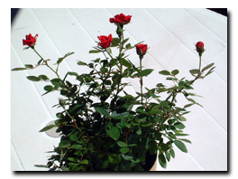
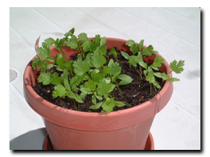
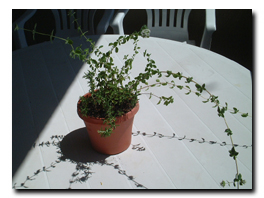

2004.6.14 Mon.
..+☆ バルコニーの観察記録 ☆+..
 |
 |
| ミニバラがとうとう咲きました! |
|
|
|  |
 |
コリアンダー
こんなに大きくなりました |
ジャーマンカモミールとタイム |
|
 |
 |
赤紫蘇(左)は順調
青紫蘇は芽が出ない |
元気なオレガノ |
|
つぼみの出てきたミニバラがとうとう咲きました！自分で咲かせたと思うと嬉
しいですね。コリアンダーは大きくなったのでビニールをかぶせる必要がなく
なりました。こっちは乾燥がすごいので、芽が小さい間はビニールをかぶせな
いと、朝、水をやっても、帰ってくる頃にはカラカラに乾いて、くた〜〜となっ
てしまうのです。食べるために撒いた青紫蘇だけがまだ芽を出しません。来週、
インディアナポリスから帰ってきたら、もう一度、種を撒いてみようかと思っ
てます。
2004.6.5 Sat.
..+☆ アパートの花々 ☆+..
 |
|
| 道路に面した花壇 |
いつもきれいな花が植え替えられる |
|
|
|
| 他の敷地でもよく見られる |
季節の花たち |
|
|
|
| 1年中元気なローズマリー |
ときどきとってきて^^;お料理に |
|
|